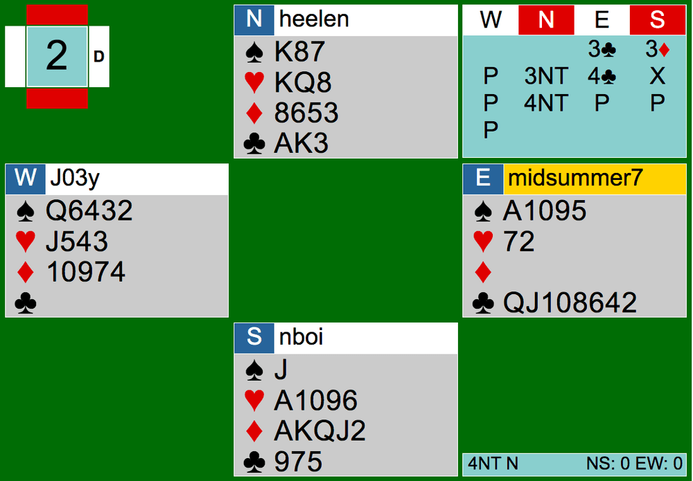
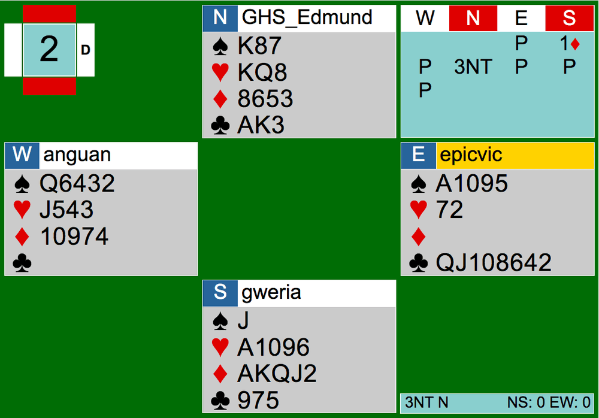
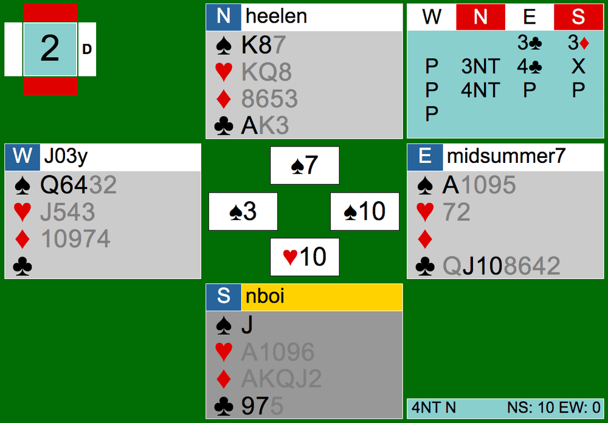

Instead of writing about Tuesday, July 21st’s Cardology Kidz team game, let’s analyze a board from 7/18’s CK team match. If you recall, we had 16 CK players, meaning 2 complete team games! Last article, I talked about bidding to game while pulling examples from Team Game #1, but now, we’re looking at Team Game #2. This game was particularly interesting for me. I sat in North at one table, the same seat as the one and only Edmund (the pro) at the other table. Both tables reached the same contract sometimes, but somehow Edmund took more tricks than me. Perhaps it was the opponents… we’ll find out in today! Here is the link to Team Game #2’s hands so you can follow along: https://webutil.bridgebase.com/v2/tview.php?t=5925-1595115718


Right off the bat, our results contrasted on Board 2. At my table, the contract landed in 4NT by North. The bidding started off with a 3C preempt by East, followed by a 3D overcall by South. With a balanced hand and two club stoppers, I bid 3NT in North. East interestingly overcalled 4C over 3NT, which South doubled and I bid 4NT. At the other table, East chose not to preempt clubs. South opened 1D instead and North jumped to 3NT. Their auction ended there.
With so many controls in NS’ hands, 3NT should be easily made. Counting from North’s perspective, it looks like there is one club loser, no diamond losers, no heart losers, and at least one spade loser. There is also an opportunity to pitch a loser on the 5th diamond in dummy. Another loser could be pitched away on the fourth heart if split 3-3. It looks like making 6 is highly likely.
In reality, I only made 4NT+1 while Edmund at the other table was able to make 3NT+3. The opening leads were one of the reasons why Edmund was able to take one more trick than me. East led the 2 of clubs from QJTxxxx. When you have a sequence, you should lead top of the sequence. Here, it made a significant difference because North got to pitch win with his small club, which should have been a loser. At my table, East correctly led the Queen, making me take it with my King. However, even though I was not able to win with one of my losers, I could have still made 6. At trick 11, I had just won with the set-up 10 of hearts. What should I play from dummy here?

The correct answer is the Jack of spades. I played the club to my Ace on the spot here, but I should have known that the ten and the 9 of spades were pitched, setting up my 8 of spades after the honors have been played out. Playing the Jack of spades will force East to play a club to my Ace, and then I would be able to take my last spade trick no matter what. Ideally, when I play my Jack, West will cover with the Queen, North will cover with the King, and East will take the trick with the Ace of spades. After that, my 8 of spades is set up and I could get into my hand with the Ace of club after East leads it towards me. Even if West decides to not cover my Jack with the Queen, North wouldn’t cover the Jack with the King, and East would have to play the Ace of spades over the Jack, allowing my King of spades to win when East leads a club back into my hand. Besides this amusing endplay situation here, that concludes this board at my table.
The spades at the other table were played out nicely. Edmund, North, played the spade on the last trick, limiting the number of spade losers to 1. After cashing the diamonds and the clubs, he set up the fourth heart. With the Jack of spades being the only card left to play, East only took the Ace of spades. This one trick difference gave Team D 1 IMP.